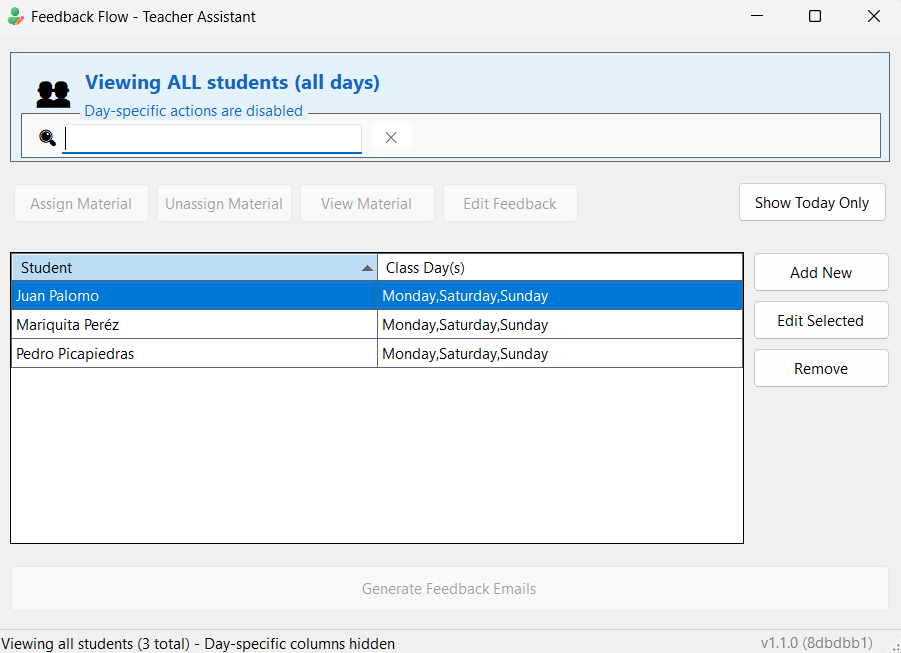

Automate your student notes, organize individualized class materials, and generate professional email drafts in seconds. Built for speed with .NET 10.

Automatically creates date-stamped folder structures for every student on your list. Stay organized without trying.
Assign specific PDFs to each student. The app tracks who gets which material for personalized learning paths.
Generates drafts for "New Outlook" with attachments included. You just write the body and click send.
Feedback-Flow is free and open-source. Help keep it alive!
YOUR_BTC_ADDRESS_HERE